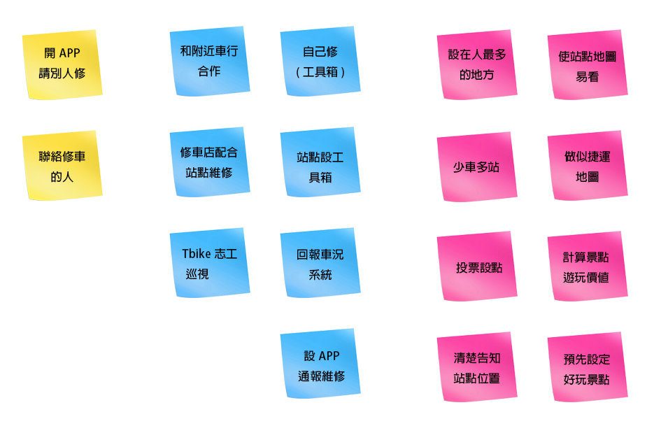
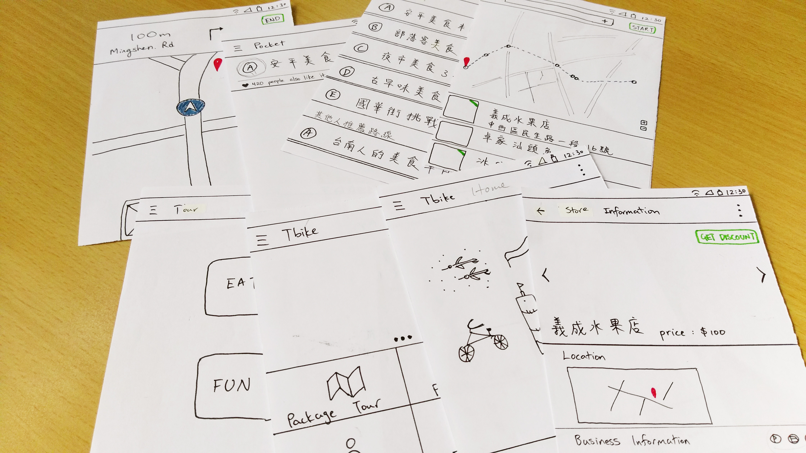

Develop
Method : Brainstorming
在進行腦力激盪的過程中，我們先列出how might we(HMW)的問題，依據此在給予的「八分鐘」時間內做點子發想。最後將所有的點子做分類，製成親合圖(affinity diagram)。
前期的腦力激盪由於HMW問題定義不佳，導致想法無法聚焦。透過重新檢視需求並再次進入田野與使用者訪談方式，填補過去忽略的問題。
Brainstorming 1 (Failed)
起初，我們想在自行車上裝設小裝置，讓每台車都變成一個智慧型的物件與外部的環境互動連結。當使用者騎上單車，裝置便會依照所在位置提供方圓幾公尺內的店家資訊。
然而，經過其他替代方案的比較與考量後，我們選定可行性與整合性較高的APP放置於單車上，以替代小裝置。決定媒介後，便開始發想細部內容與進行規劃。為了避免想法與人重複，同時吸取目前已於線上產品服務的經驗，案例分析是必要的。
Case study
- 1. 台南Tbike官方網站
- 2. 台南市觀光旅遊局
- 3. 愛食記APP
- 4. 著名部落客網站
//
Deliver
Paper prototype
[ 第一波測試，我們找大學生操作，先確認基本功能使用上順暢，介面配置是否直覺。同時給予其他使用APP上的建議，最後在討論視覺上的喜好。]
App Design Elements
- + 平台上提供官方套裝行程，其他使用者亦可以提供推薦套裝行程。
- + 套裝行程路線經過計算，在特定公里數內必有Tbike站點。
- + APP個人化，提供收藏景點、套裝行程、過去使用紀錄等功能。
- + 提供社交圈，可以與同好分享行程，或評論店家。
- + 與店家合作，提供折價券，同時做廣告內容。